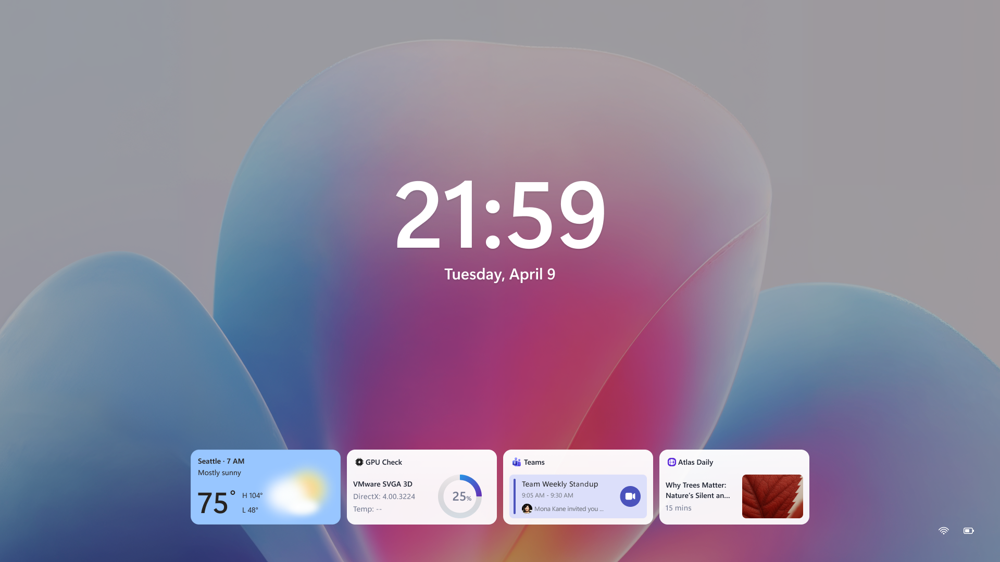
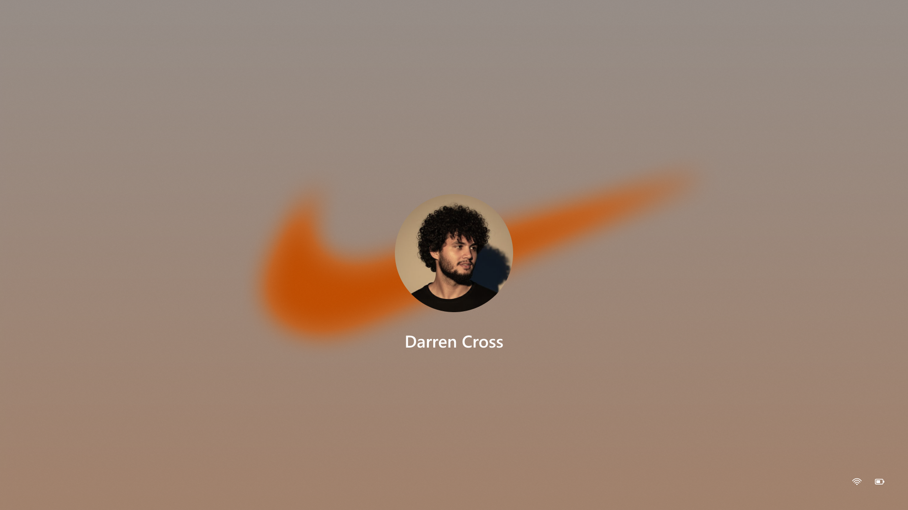
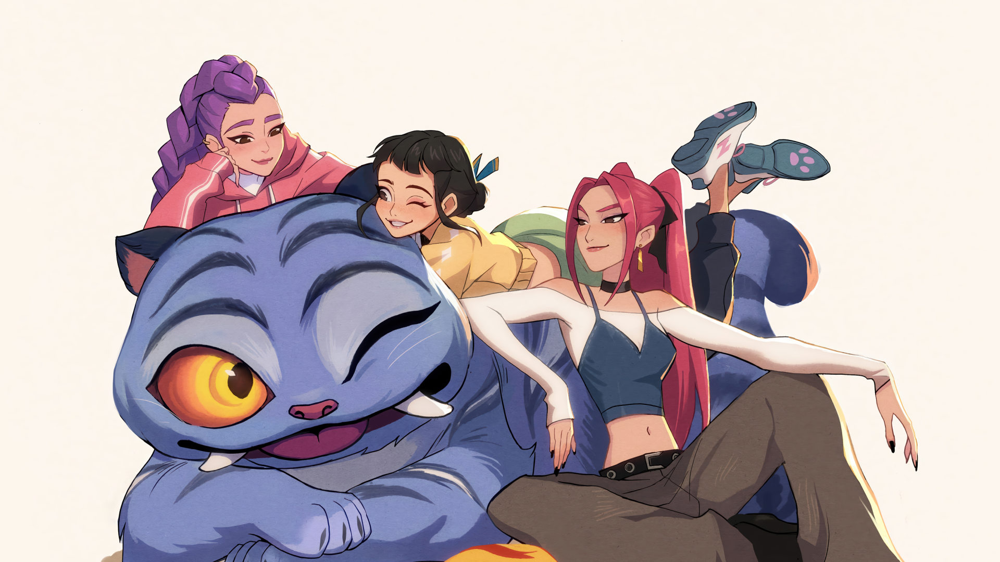
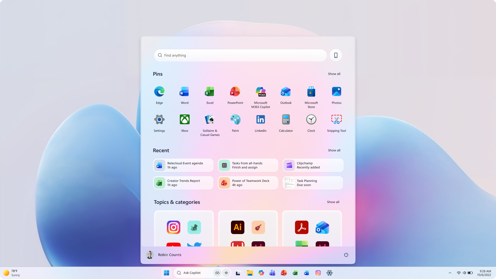

It's still Windows. Now it's mine.
Personalization in Windows has always existed — wallpapers, accent colors, dark mode. But this prototype asks a bigger question: what if Windows could reflect who you actually are? Not just your color preference, but your identity — your fandoms, your profession, your mood on a Tuesday afternoon.
The work is a vision prototype: a designed argument for a new direction in Windows personalization, exploring what happens when themes become complete expressive worlds, when Copilot becomes the creative interface, and when saving and sharing a theme becomes a social act.
now it's mine."
The matrix is the central design artifact. Reading across a row shows how each surface behaves within the theme system. Reading down a column shows how a single identity — say, LEGO — expresses itself differently in the wallpaper versus the lock screen versus the account screen. Both views tell you something important about whether the system is working.
Six themes were chosen to stress-test the architecture across vastly different cultural contexts: a gaming IP (Halo), a construction toy brand (LEGO), a sportswear brand (Nike), an anime/K-pop illustrated world, a developer identity, and the default Nova Base. If the system holds for all six, it holds for anything.
Nova Base — the canvas everything starts from
Nova is the default: the soft, abstract gradient world that ships with Windows 11. Its role in the prototype is important — it's the state before you've told Windows anything about yourself, and it needs to feel warm and inviting rather than generic. The invitation to personalize should feel like an opportunity, not a correction.
The Nova lock screen with its widget row — weather, GPU status, Teams meeting, news — shows the foundation. Calm, spacious, well-composed. The bar everything else is measured against.

Complete worlds, not just wallpapers
Each theme is designed as a total environment. The lock screen in the Nike theme doesn't just show a Nike wallpaper — the swoosh becomes an ambient presence behind the user avatar, the color palette shifts to warm tan and burnt orange, the whole surface feels like it belongs to that brand world. The LEGO lock screen goes full red, the avatar becomes a minifig, the typography weight shifts to match the IP's energy.
This is the core design challenge: achieving deep theme fidelity across surfaces that have very different functional constraints. A wallpaper has all the latitude in the world. A lock screen has to remain legible and functional. The account screen is three elements: background, avatar, name. The Start menu has to stay usable. The question is how much of the theme world can live in each surface without breaking the experience.



K-pop Demon Hunters — designing for a different visual language
Most gaming and branded themes lean dark and saturated. K-pop Demon Hunters is the deliberate counterpoint: a richly illustrated world with a light background, anime-adjacent character design, and a palette that's soft and warm rather than high-contrast. Designing Windows surfaces for this theme required a completely different set of decisions — how does a light-background illustration become a wallpaper that the taskbar and lock chrome still read against?

Start as a personal surface
The Start menu prototype (Nova Base shown) explores what happens when the surface takes on signs of life. Pinned apps, recent files, and "Topics & categories" already make Start contextual. The design question is how theme identity enters this surface: not just as a background color, but as a way of surfacing content and structure that fits who you are.
The "Topics & categories" section is particularly interesting — it's already doing implicit personalization based on installed apps and usage. The prototype explores how a chosen theme or expressed identity could shape this seeding, making Start feel genuinely curated rather than algorithmically configured.

The harder questions underneath the surface
The visual execution is the visible part of this work. But the prototype is also a vehicle for exploring harder product and design strategy questions about where Windows personalization should go.
Industry & IP themes: Can Windows host partnership themes — LEGO, Nike, gaming titles — in a way that feels elevated and native? What's the design contract that makes a branded theme feel like it belongs to Windows rather than being bolted on?
Copilot as composer: What if the entry point to personalization wasn't Settings — it was a conversation? "Make my Windows feel like a developer who loves Halo" → Copilot composes and applies a theme. The prototype explores Copilot as the creative interface for personal expression.
Save & share: Themes as social objects. If you could package your theme and share it — or discover themes other users made — how does that change the personalization ecosystem? This treats Windows not just as a product but as a platform for creative expression.
Widgets from the composer: Rather than picking widgets from a static catalog, what if the Copilot composer suggested contextual widgets on the fly — "on the spot vibe" widgets that match the world you're building, surfaced at the moment of creation?
A new grammar for Windows identity
The prototype demonstrates that Windows can be a canvas for identity — not just preference — at scale. The matrix format is especially powerful for internal communication: six complete worlds side by side makes the design argument more compellingly than any single screen could.
The work has surfaced real product questions — about theme creation, distribution, the role of Copilot and AI in personal expression, partnership models with IP holders — that are actively shaping design strategy conversations at Microsoft.